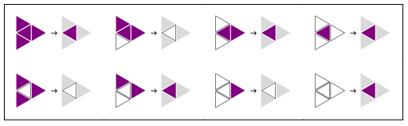

Abstract
Abstract
This website is about Cellular Automata in the triangular grid, or Triangular Automata (TA) for short. On this page, you will find an introduction to TA, starting from the basics and building up to some more advanced concepts. In the gallery, all elementary TA can be explored in many ways. Use the control panel at the bottom of the page and let your curiosity guide you toward what you find intriguing or beautiful. You can learn more about how these results have been computed, and play with the Mathematica package yourself by clicking on code. Do not hesitate to contact me if you want to know more about this project.
 Introduction
Introduction
Cellular Automata are mathematical objects composed of two elements: a grid whose cells hold states defined at time $t=0$, and a local and deterministic rule iteratively applied to evolve the grid to any discrete time step $t\in\mathbb{N}$. Their interest comes from the fact that they display complex behavior eventhough they can often be described in few sentences only. For this reason, cellular automata have been an key model to gain insight into real world complex systems. Here, we are going to look at cellular automata in the triangular grid, or Triangular Automata (TA) for short.

We are going to look in particular at Elementary TA, which is the simplest type. Elementary TA grid cells hold only binary states. Each cell will thus either be:
- ‟alive” and colored purple
 , with a state $s=1$
, with a state $s=1$ - ‟dead” and colored white
 , with a state $s=0$
, with a state $s=0$
 |
 |
 |
 |
 |
 |
 |
 |
|---|---|---|---|---|---|---|---|
| 0 | 1 | 2 | 3 | 4 | 5 | 6 | 7 |
A rule must specify for each of these configurations if the cell will be alive or dead at the next time step. Here is an example of such a rule.
Binary TA can be considered as the two-dimensional counterpart to Wolfram’s Elementary Cellular Automata[x] for two reasons:
- there are only $2^8=256$ possible rules
- the triangle is tiling 2D space with the smallest possible number of neighbors per cell
In the following sections, we are going to learn more about TA, see how they can be efficiently implemented using graph theory, find an elegant way to index the rules, and much more.
 Graph theory
Graph theory
To think mathematically about TA and implement them effisciently, we are going to use a framework based on graph theory and linear algebra[x].